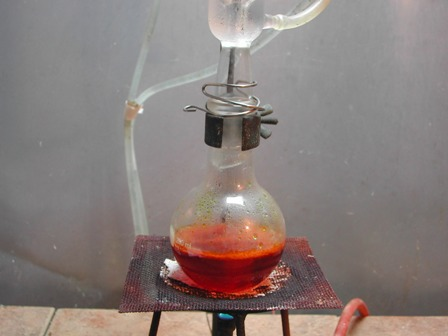
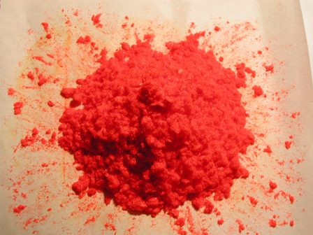

Tempo fa, nel post n. 245, avevo preparato una quantità maggiore del solito (ca. 30 g) di 2,4-dinitroclorobenzene perchè avevo già allora l'idea di utilizzarlo come futuro intermedio... di un intermedio... di un intermedio... eccetera, fino ad arrivare...
Ecco il secondo intermedio della serie, la N-(2,4-dinitrofenil)-fenilammina, ottenuta grazie ad una favorita sostituzione nucleofila aromatica tra il cloro e l'anilina rispettivamente nei due reagenti in gioco.
La reazione è la seguente:

Materiale occorrente:
- 2,4-dinitroclorobenzene
- anilina
- etanolo
- vetreria opportuna
- porre in un pallone da 250ml 15 g di dinitroclorobenzene, 75ml di etanolo e 13 ml di anilina.
L'ammina è in forte eccesso perchè servirà anche ad assorbire l'HCl che si libera man mano dalla reazione formando il rispettivo cloridrato.
Appena aggiunta l'anilina la soluzione assume immediatamente una colorazione rosso-arancio.
Applicare al pallone un refrigerante a bolle e scaldare a piccola fiamma.

[*evidenzio anche in questo caso il mezzo di riscaldamento anacronisticamente adottato: il buon vecchio bunsen e una orrenda reticella decisamente da cambiare. Cose dell'altro mondo rispetto ai lab serissimi? Può darsi... però basta starci attenti e anche in uno sgangherato lab come il mio si riesce a fare con rustici mezzi (proprio come si faceva un tempo!) quasi quel che si vuole...*].
Dopo il pensierino espresso a voce alta il contenuto del pallone si sarà intanto riscaldato e quindi continuare il tranquillo riflusso; ad un certo punto si vedrà iniziare la formazione di una sostanza cristallina rossa che in una mezz'oretta quasi riempirà il pallone, come fosse tutto solidificato; eventualmente aggiungere un poco di etanolo.
Lasciar poi raffreddare, estrarre il prodotto con l'aiuto di una spatolina e filtrare su buchner.
La N-(2,4-dinitrofenil)-fenilammina è assai voluminosa e si filtra con la massima facilità anche comprimendola sul filtro.
Lavarla bene con numerose porzioni di qualche ml di etanolo freddo, il quale alla fine deve passare completamente incoloro ed avrà rimosso sia i reagenti in eccesso che l'anilina cloridrato formatosi.
Seccare all'aria il voluminosissimo prodotto, che si presenta sotto forma di leggeri cristallini sericei di un bel colore rosso arancio brillante.

E' una sintesi veramente di soddisfazione visiva come poche, perchè essendo il prodotto molto leggero, sembra tantissimo; la resa è stata di 16,5 g, pari all'82%.
La prossima volta circa metà di questa 2,4-DFFA subirà un ulteriore trattamento che la farà diventare un successivo intermedio verso la meta finale.